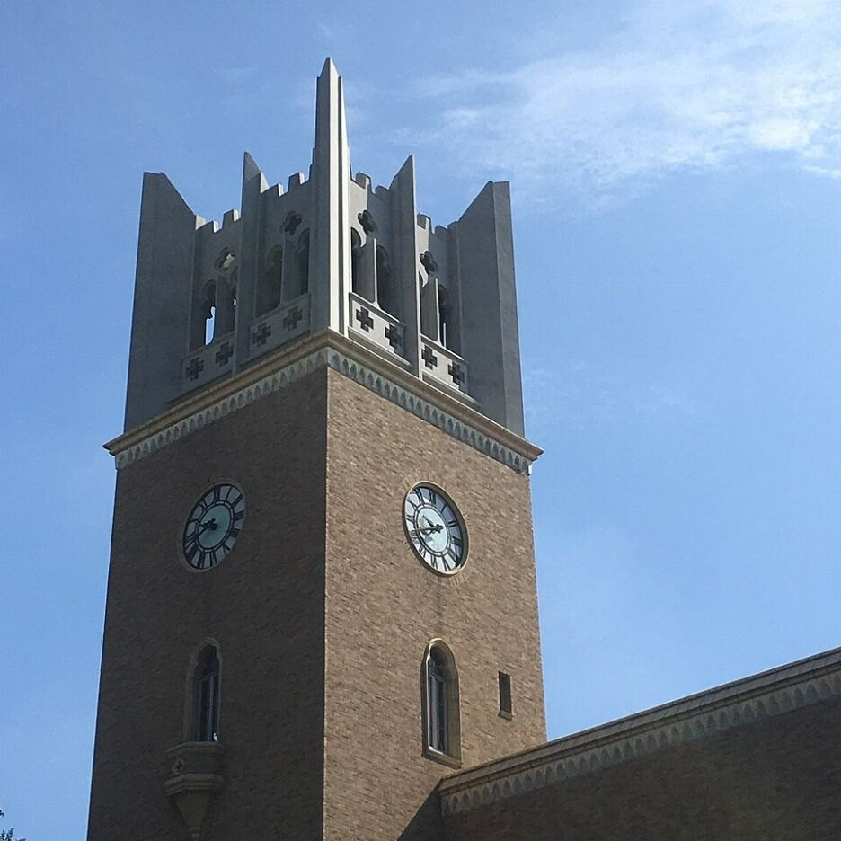

01
UNIVERSITY YEARS / 2027
DASS
カレッジ
大学4年間を、
実力に変える。
ZEN大学のオンライン学修と、モントリオールでの生活・語学・就労経験をつなぐ新しい大学生活。大学名だけではなく、4年間で何を経験し、何ができるようになったかを形にします。
- オンライン大学 × 海外生活
- 2年次は原則モントリオールへ
- 経験を就活・キャリアの武器に
CHOOSE YOUR NEXT
高校、大学、語学留学、キャリア。次の学生生活を、ここから選べます。
UNIVERSITY YEARS / 2027
大学4年間を、
実力に変える。
ZEN大学のオンライン学修と、モントリオールでの生活・語学・就労経験をつなぐ新しい大学生活。大学名だけではなく、4年間で何を経験し、何ができるようになったかを形にします。
 02
02
THREE-YEAR HIGH SCHOOL PROGRAM
高校3年間を、
日本だけで終わらせない。
N高等学校・S高等学校・R高等学校で高校卒業を目指しながら、1年次と2年次にモントリオールへ。高校卒業、留学、英語、探究、大学進学を一つの3年間として設計します。
MONTRÉAL LANGUAGE SCHOOL
英語かフランス語を、
モントリオールで学ぶ。
英語とフランス語が共存する街で、学びたい言語に集中する語学留学。2週間の短期から長期まで、日本語による渡航準備と現地生活のサポートを行います。

THE FUTURE PREPARATORY SCHOOL
現在の成績で決めない。
方向を示し、合格まで伴走する。
DASS独自のアプローチで、国内外の難関大学やDASSカレッジを目指す中高生のための「未来の予備校」です。今の成績だけで可能性を決めず、Potential Compassと対話から本人の強みと進む方向を明確にします。入試方式と学習計画を設計し、代表面談とチューターの伴走で、計画を続けて結果につなげます。
今の成績、今の学校、今いる場所。それだけで、その人の将来を決めない。
DASSは、本人も周囲もまだ気づいていない力を見つけ、その力が生きる環境と挑戦をつくります。小さな一歩が、次の選択肢を増やし、やがて人生の方向を変えていくと考えています。
COMPANY
きっかけ創造カンパニー